On geometric intersection graphs
University of Illinois, Urbana-Champaign
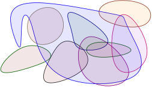
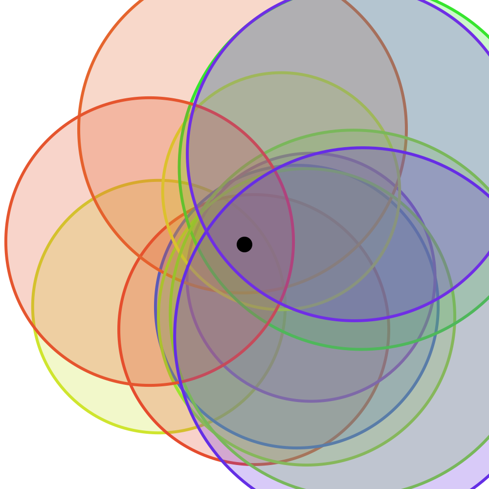 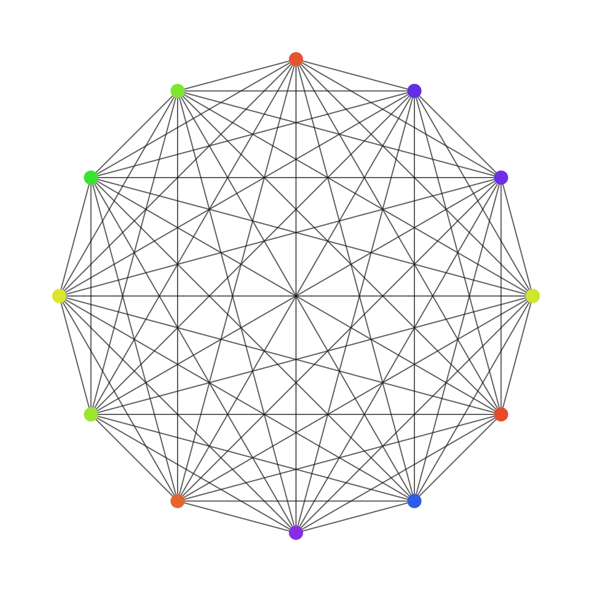
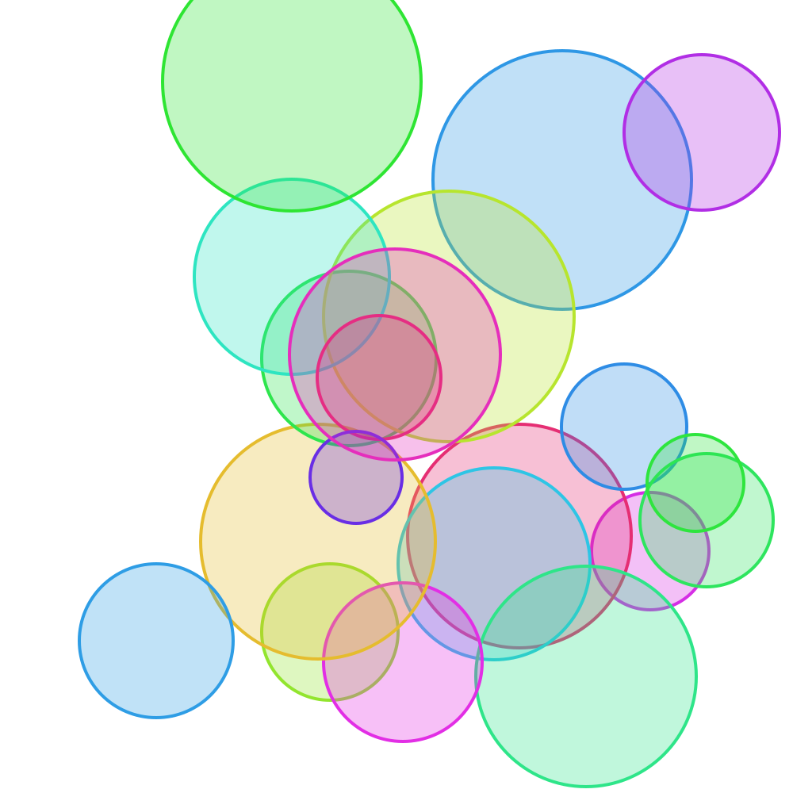 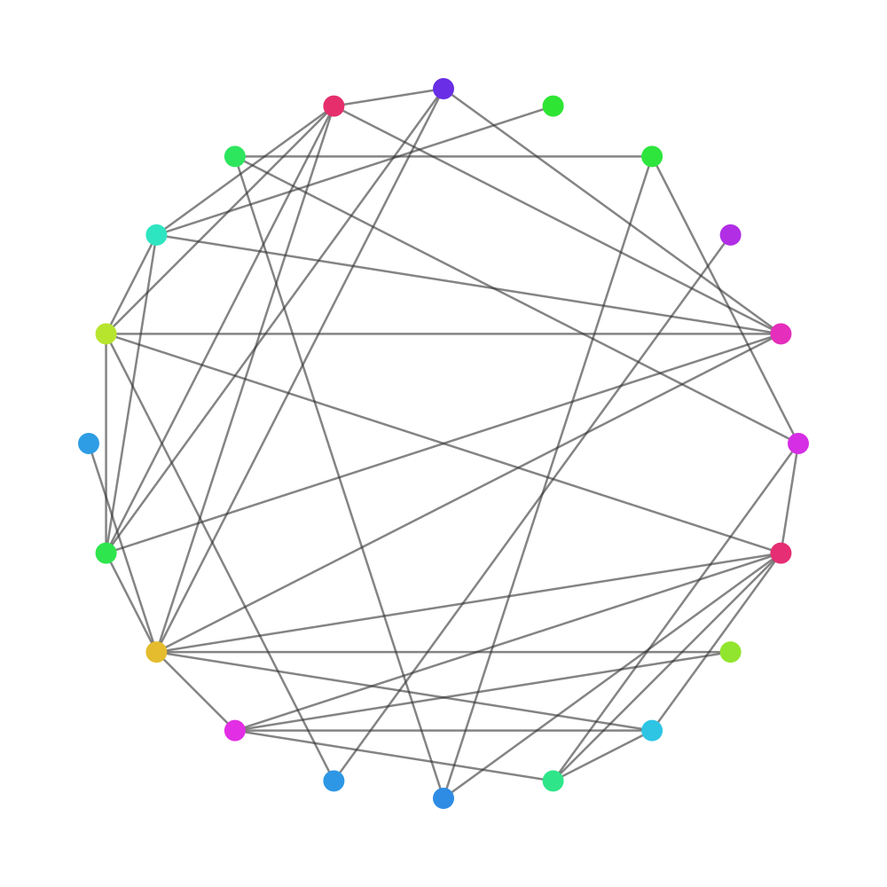
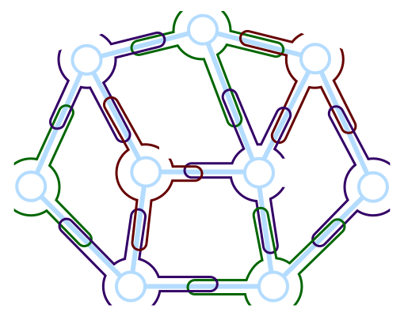
What are these geometric intersection graphs?
What planar-graph like properties do they have?
\(\newcommand{\pth}[1]{\left({#1}\right)} \newcommand{\eps}{{\varepsilon}} \newcommand{\IntRange}[1]{[ #1 ]} \newcommand{\ObjSet}{\mathsf{S}} \newcommand{\ball}{{b}} \newcommand{\Family}{\mathcal{F}} \newcommand{\cardin}[1]{\left| {#1} \right|}% \newcommand{\EdgesX}[1]{\mathsf{E}\pth{#1}}% \newcommand{\Vertices}{\mathsf{V}} \newcommand{\ISet}{\mathcal{I}} \newcommand{\locSet}{{L}} \newcommand{\optSet}{{O}} \newcommand{\FALSE}{\textsc{FALSE}} \newcommand{\Edges}{\mathsf{E}}% \renewcommand{\Re}{\mathbb{R}}% \newcommand{\Graph}{\mathsf{G}} \newcommand{\GraphA}{\mathsf{H}} \newcommand{\GraphB}{\mathsf{K}} \newcommand{\densityOp}{{\mathop{\mathrm{density}}}} \newcommand{\densityX}[1]{\densityOp\pth{#1}} \newcommand{\cDensity}{{\rho}}\)
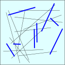
Problem: Compute max size subset of segments not intersecting.
QPTAS\(~\)(Adamaszek & Wiese, 2013)
Open question:
PTAS for this problem?
constant-approx?
General graphs: No approximation within \(n^{1-\eps}\), \(\forall \eps> 0\).
Intersection graph of strings: QPTAS.
(Mitchell, 2024): \(O(1)\)-approx axis-aligned rectangles.
Meta question: Why can do better in geometric settings?
Planar graphs.
Geometric intersection graphs.
Low density graphs.
Polynomial expansion graphs.
Bad graphs:
Constant degree expanders.
Dense/complete graphs.
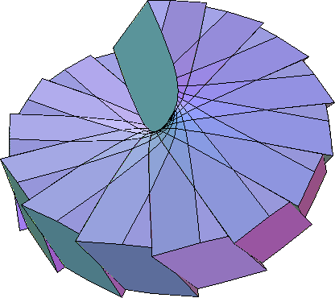
\(\qquad\)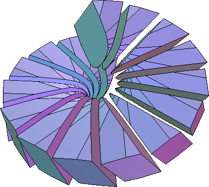
Everything is realizable in three dimensions.
Any \(3\)-regular graph = intersection graph triangles in 3d.
Must assume something additional.
Figures from (Erickson & Kim, 2003).
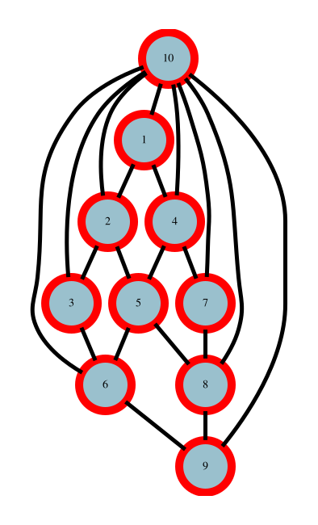
Edges are Jordan arcs.
(Fáry, 1948): Edges are straight segments.
(Fraysseix, Pach, & Pollack, 1990) Edges segments + vertices in \(\IntRange{2n}\times \IntRange{n}\) grid.
(Koebe, 1936), (Andreev, 1970) Circle packing theorem (Koebe-Andreev-Thurston theorem)
Planar graphs = \(\cap\)-graphs of interior disjoint disks.
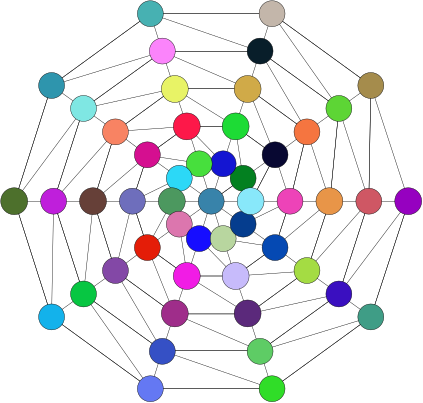
\(\qquad\)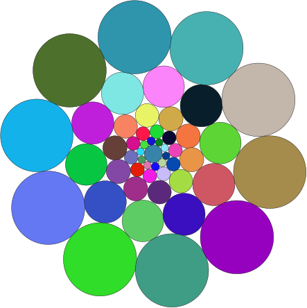
Figures drawn using Circle Packing software:
http://w3.impa.br/~loustau/circlepackingsen.html
\(\qquad\)
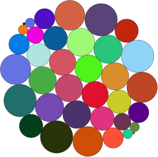
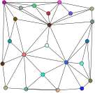
\(\qquad\)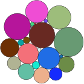
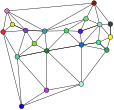
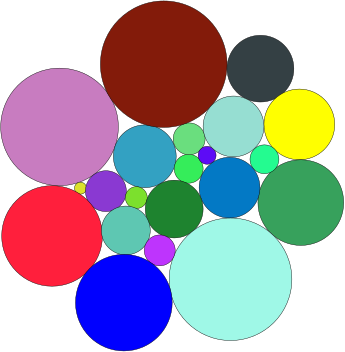
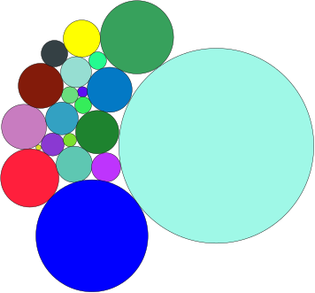
Start with graph.
Triangulate.
Compute straight line embedding.
Assign radii to vertices, arbitrarily.
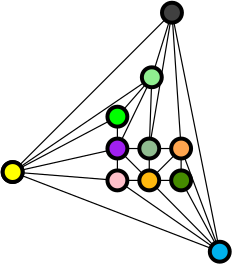
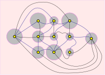
Start with graph.
Triangulate.
Compute straight line embedding.
Assign radii to vertices, arbitrarily.
Yields a ``local’’ triangulation.
Game: By changing radii make all vertices locally planar.
Sum of angles at a vertex \(= 360^{\degree}\).
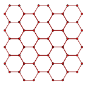
\(\qquad\)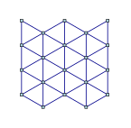
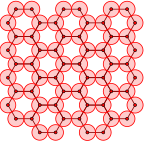
\(\qquad\)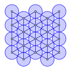
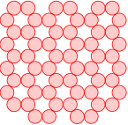
\(\qquad\)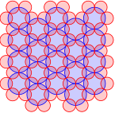
\(\qquad\)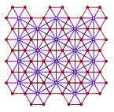
Circle packing theorem: Guarantees simultaneous representation for primal+dual graphs.
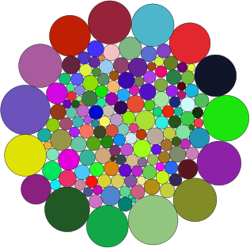
\(\qquad\)
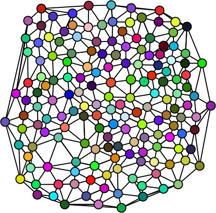
\(\qquad\)
\(\qquad\)
\(\qquad\)
\(\qquad\)
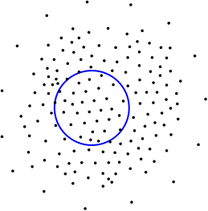
\(\qquad\)
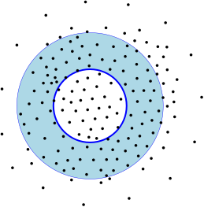
\(\qquad\)
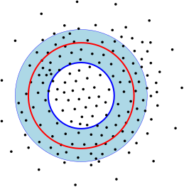
\(\qquad\)
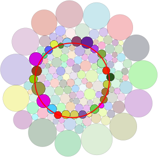
\(\qquad\)
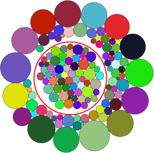
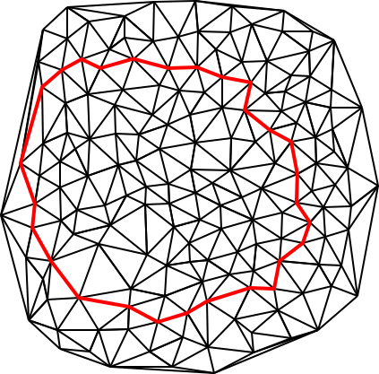
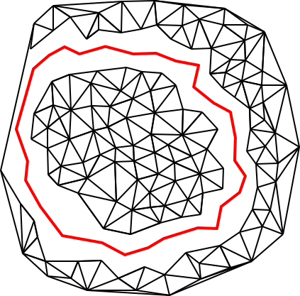
\(\qquad\)
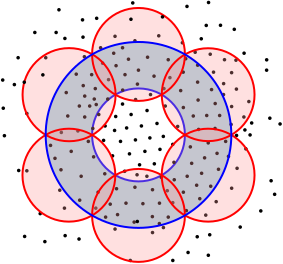
\(\qquad\)
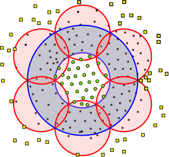
\(\qquad\)
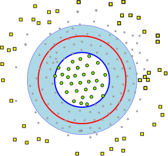
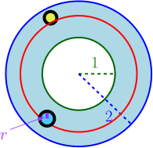
Prob. disk intersect circle \(2r/1 =2r\). (\(r \approx 1/\sqrt{n}\)).
Expected # small disks: \(O(n (1/\sqrt{n})) = O(\sqrt{n})\).
\(\#\) large disks: \(O(\sqrt{n})\).
… Large disk “occupies” \(1/\sqrt{n}\) of length of circle.
(Andreev, 1970): Observed by Thurston.
(Koebe, 1936): A forgotten result.
Planar separator theorem
(Ungar, 1951): \(O(\sqrt{ n \log n})\).
(Lipton & Tarjan, 1979): \(O( \sqrt{n})\).
(Miller, Teng, Thurston, & Vavasis, 1997) Geometric proof
(Miller, 1986): Cycle separator (graph is triangulated)
Graphs represented as intersection graphs?
Graph with small separators?
What can be solved efficiently?
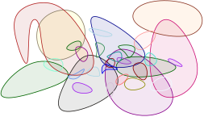
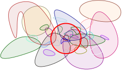
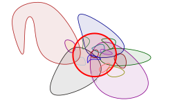
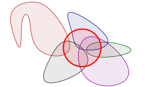
\(\ObjSet\): Objects in \(\Re^d\) (\(d=O(1)\)), \(\ball\): ball.
density of \(\ball\) \(=\) \(\#\) ``larger’’ objects in \(\ObjSet\) that intersect \(\ball\).
\(\cDensity =\densityX{\ObjSet}\): Max density of any ball.
If \(\cDensity = O(1)\) \(\implies\) \(\ObjSet\) is low density.
(Stappen, Overmars, Berg, & Vleugels, 1998), (Schwartz & Sharir, 1985)
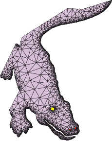
\(\quad\)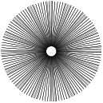
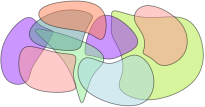 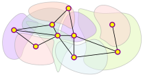
Definition: low density graph \(\Graph\)
\(\Graph\) realizable as intersection graph of set low density objects \(\subseteq \Re^d\).
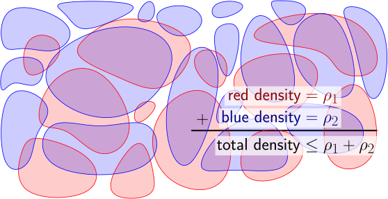 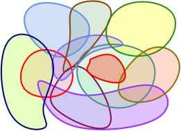
\(\qquad\)additive \(\qquad\qquad\qquad\qquad\) degenerate
\(\quad\)
\(\qquad\) separable \(\qquad\qquad\) arbitrarily large clique minors
Definition: \(t\)-cluster
Subgraph \(\GraphA\) of \(\Graph\) is a \(t\)-cluster if \(\mathrm{radius}(\GraphA) \leq t\).
\(\Family\): Disjoint set of \(t\)-clusters of \(\Graph\).
\(\Family\): Disjoint set of \(t\)-clusters of \(\Graph\).
\(\Family\): Disjoint set of \(t\)-clusters of \(\Graph\).
Definition: \(t\)-shallow minor
\(\GraphB\): \(t\)-shallow minor of \(\Graph\) \(\iff\) intersection graph of disjoint \(t\)-clusters of \(\Graph\).
Definition: \(t\)-shallow minor
\(\GraphB\): \(t\)-shallow minor of \(\Graph\) \(\iff\) intersection graph of disjoint \(t\)-clusters of \(\Graph\).
Growth rate of \(\Graph\): \(\displaystyle f(t) = \max_{\GraphB \in \triangledown_t(\Graph) }\frac{\cardin{\Edges \pth{{\GraphB}}}} {\cardin{\Vertices \pth{\GraphB}}}\)
Two layers of the 3d grid.
\(n=128\): vertices
\(m=288\): edges
\(D=4.5\): Avg Deg
\(n=128\): vertices
\(m=288\): edges
\(D=4.5\): Avg Deg
radius \(= 2\)
\(n=64\)
\(m=168\)
\(D=5.25\)
\(n=128\): vertices
\(m=288\): edges
\(D=4.5\): Avg Deg
radius \(= 3\)
\(n=48\)
\(m=138\)
\(D=5.75\)
\(n=128\): vertices
\(m=288\): edges
\(D=4.5\): Avg Deg
radius \(= 4\)
\(n=32\)
\(m=108\)
\(D=6.75\)
\(n=128\): vertices
\(m=288\): edges
\(D=4.5\): Avg Deg
radius \(= 8\)
\(n=16\)
\(m=78\)
\(D=9.75\)
| \(t\): radius | \(n\) | \(m\) | Avg-Deg | \(\approx f(t)\) |
|---|---|---|---|---|
| \(1\) | \(128\) | \(288\) | \(4.5\) | \(2.25\) |
| \(2\) | \(64\) | \(168\) | \(5.25\) | \(2.625\) |
| \(3\) | \(48\) | \(138\) | \(5.75\) | \(2.875\) |
| \(4\) | \(32\) | \(108\) | \(6.75\) | \(3.375\) |
| \(8\) | \(16\) | \(78\) | \(9.75\) | \(4.374\) |
Planar graphs: \(f(t) = O(1)\).
Constant degree expanders: \(f(t) = 2^{O(t)}\).
Low density graph (\(\cDensity\): density. Induced by objects in \(\Re^d\)).
\(f(t) = t^{O(d)} \cDensity\). (Har-Peled & Quanrud, 2015)
Polynomial expansion graphs: \(f(t) = t^{O(1)}\).
Introduced by (P. Ossona de Mendez, 2008).
Low density graphs \(\subseteq\) polynomial expansion graphs.
Jaroslav Nešetřil, Patrice Ossona de Mendez
Trees.
Planar graphs.
Bounded genus.
Excluded minor.
Bounded tree width.
Low density.
Polynomial expansion
Constant degree expanders.
Bounded expansion.
Locally bounded tree width/locally bounded expansion.
Nowhere dense graphs.
Theorem (P. Ossona de Mendez, 2008)
\(\Graph\) has polynomial expansion
\(\implies\) \(\Graph\) has hereditary separator of size \(O(n^c)\), for \(c < 1\)
Theorem (Dvořák & Norin, 2015)
\(\Graph\) has hereditary separator of size \(O(n^c)\), for \(c < 1\)
\(\implies\) \(\Graph\) has polynomial expansion.
\(L\): Current local solution
\(G\): Graph
\(X\): Set to change
\(S\): Set of \(n\) objects
Question: For what graphs the above is a PTAS?
Recursive application of separators
Break graph into patches of size \(b= 1/\eps^{O(1)}\).
\(\#\) boundary vertices in patch: Sublinear in \(b\).
\(b\)-divisions: (Henzinger, Klein, Rao, & Subramanian, 1997)
Planar graphs: # boundary vertices for cluster \(O(\sqrt{b})\).
\(42\): Size of opt solution
\(38\): Size of local solution
Graph induced on \(L \cup O\)
Matching solutions
Compute \(b\)-division with \(\eps \text{opt}\) \(\partial\)vertices
Break into clusters by removing \(\partial\)vertices.
If \(L\) too small \(\implies\) \(\exists\) good exchange.
Every cluster must be roughly balanced.
\(\cardin{L} \geq (1-\eps) \cardin{\text{opt}}\).
\(\cardin{L} \geq (1-\eps) \cardin{\text{opt}}\).
(Mustafa & Ray, 2009): PTAS for hitting set of disks.
(Chan & Har-Peled, 2009): PTAS for independent set of disks
A string graph with \(m\) edges \(\exists\) separator of size \(O( \sqrt{m } )\) (Lee, 2016)
There are examples where string graphs require exponential number of crossings. (Matousek, 2014).
String graphs have the Erdős–Hajnal property
Either there is a clique of size \(\Omega(n)\) or independent set of size \(\Omega(n)\).
\(O(1)\)-Distortion Planar Emulators for String Graphs
low density graphs = Geometric intersection graphs of low density objects.
Polynomial expansion and low density: interesting classes.
Efficient algorithms for planar/low-genus graphs should be extendable to these classes.
Fertile ground for further research.
Combinatorial algorithm realizing planar graph as intersection graph of low density objects?
recognition?
Better understanding sparse graphs (nowhere dense graphs, etc).
Combinatorial algorithm for circle packing like result?
Can low density graphs be realized by a set of objects?
Overlay of road maps.
Low density of a set of objects was defined by (Stappen, Overmars, Berg, & Vleugels, 1998).
Low density graphs are discussed in detail in (Har-Peled & Quanrud, 2015).
Somewhat similar definitions can be found in earlier work, see for example (Miller, Teng, Thurston, & Vavasis, 1998).
The separator proof as shown is from (Har-Peled, 2013).
Adapted for low density graphs in (Har-Peled & Quanrud, 2015).
Both of the above are readily implied from known results: (Miller, Teng, Thurston, & Vavasis, 1997), (Smith & Wormald, 1998), and (Chan, 2003).
For technically interesting separator result for the intersection graph of strings, see (Matoušek, 2013).
Lovasz has a nice monograph describing circle-packing and other geometric representation of graphs (Lovász, 2009).
http://www.cs.elte.hu/~lovasz/geomrep.pdf
Circle packing is nicely described by (Stephenson, 2005).
One can approximate circle packing in polynomial time, but the drawing is not quite in the plane. (Mohar, 1993).
The numbers involved in circle packings are awful (Bannister, Devanny, Eppstein, & Goodrich, 2015). There are some cases where things are nicer, but the graphs are significantly more restricted (Alam, Eppstein, Goodrich, Kobourov, & Pupyrev, 2014).
Oded Schramm had some interesting extensions, from (Schramm, 1992), to (Schramm, 1990).
Almost all figures in this slides were generated using ipe.
The circle packing realizations were drawn using the following software (which was hacked to use the cairo library):
http://w3.impa.br/~loustau/circlepackingsen.html
This version of the slides was created using quarto
https://quarto.org/
Quasi-polynomial time approximation scheme.
Running time is \(2^{(\frac{1}{\eps}\log n)^{O(1)}}\)
Solution size: \(\geq (1-\eps)\mathrm{OPT}\)
Polynomial approximation scheme.
Running time is \(n^{f(\eps)}\)
Solution size: \(\geq (1-\eps)\mathrm{OPT}\)